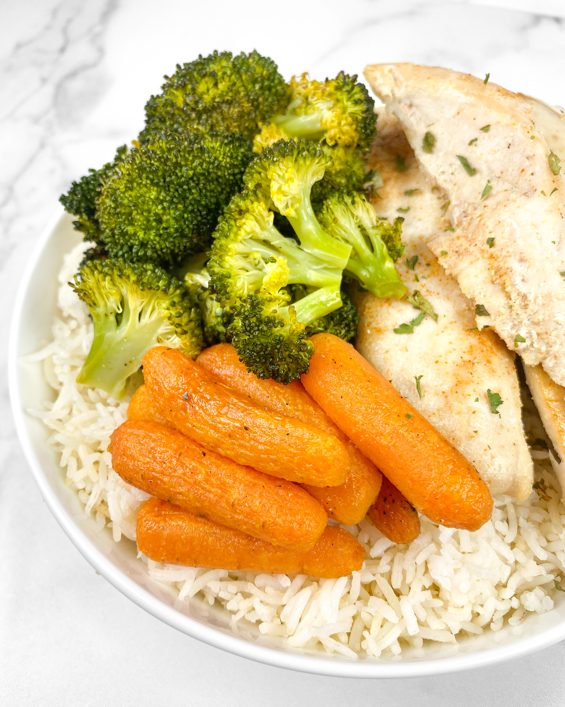

Rice, chicken & veg!

Such simple dish can be done in half hour.
Cheap ingredients and easy to make will satisfy your stomach!
Description
Ingredients
- 100g of basmati rice
- Three carrots
- 80g of cauliflower
- 200g of chicken fillet
Steps
- Boil water in small pot for 100g of basmati rice then cook it under medium heat for 10-15 minutes!
- Also boil water in second pot. When water is boiling add three carrots and cauliflower. Cook it for 10 minutes!
- Heat up pan on medium and put 15 grams of butter! Add salt, white pepper, chilli ground on each side of 200g chicken fillet. Fry it to your liking on each side!
- Prepare plate and cutlery to serve cooked meal. Enjoy it!
Home